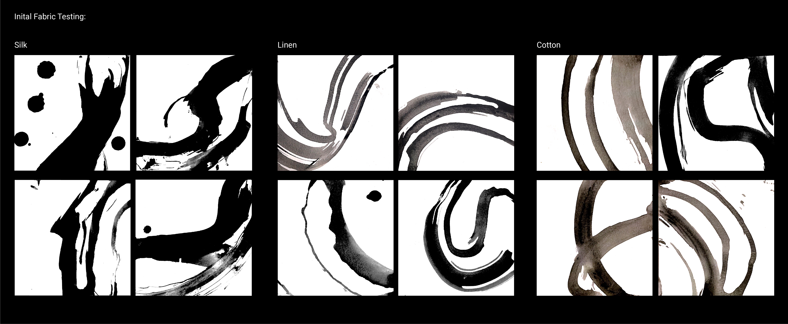
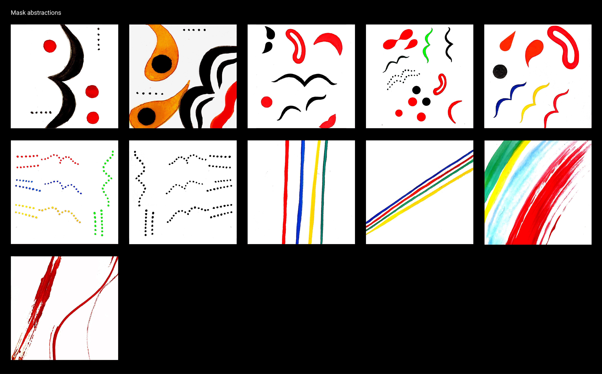
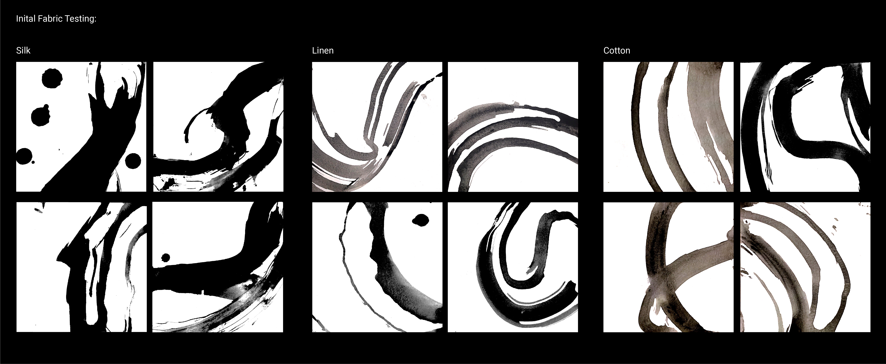
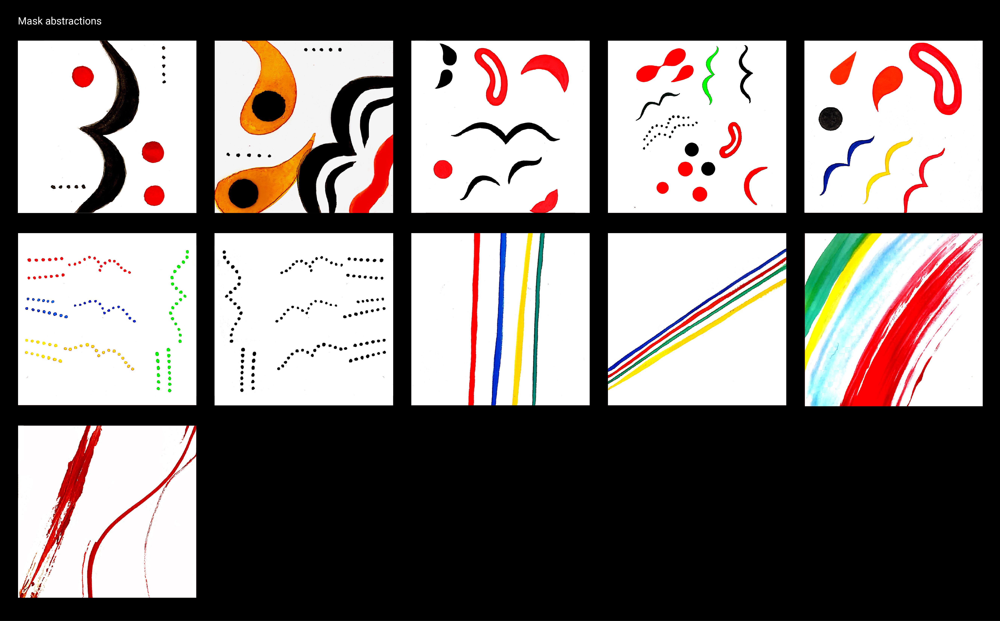

Photographs credited to Charles Fréger, François Guénet, The Seoulian, and JHAN0627
 During the Koryo Dynasty (918–1392) in Korea, Talchum was a sacred performance associated with shamanic rituals praying for good harvest. However, after the establishment of the Joseon Dynasty (1392–1910), Confucian values began to rise significantly which banished Buddhist and shamanic rituals. Thereafter, Talchum transformed into a satiric entertainment piece. Clad in exaggerated masks and clothing that extenuate the limbs, dancers perform this dramatic masked dance to show the struggles of the common person. Mocking and mimicking the frustrations and mistreatment that the lower class faced at the hands of the high ranking confucian gentry. This video illustration is an abstraction of the growing chaos and tension that talchum dancers portray.
Upon the initial testing of different fabrics, the final composition depicts silk cloth dipped in ink and lashed against a canvas to imitate the movements of the dancers. The elements of the Talchum masks were condensed and abstracted. Thus, these elements work in harmony and dissonance to portray the growing chaos and tension that talchum dancers portray.
Photographs credited to Charles Fréger, François Guénet, The Seoulian, and JHAN0627
 